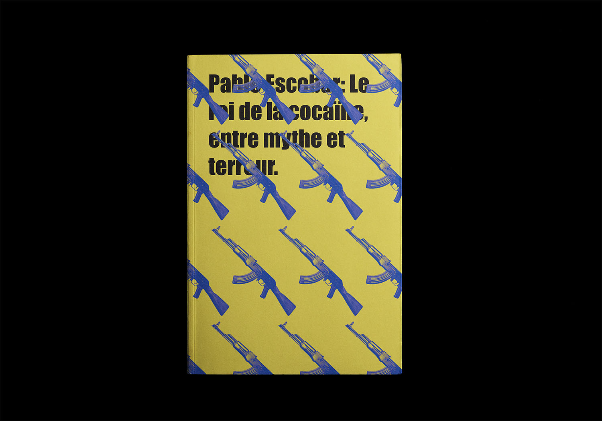

Gangsters
Réalisation d’une première et quatrième de couverture pour une collection de livres fictifs sur le thème des Gangsters. Chaque ouvrage retrace le parcours d’un gangster mythique en analysant de son enfance, aux conséquences de ses actions.
L’objectif de ce projet est de communiqué le caractère inquiétant du gangster sans entrer dans du sensationnalisme.



Project "Gangsters" - 2026